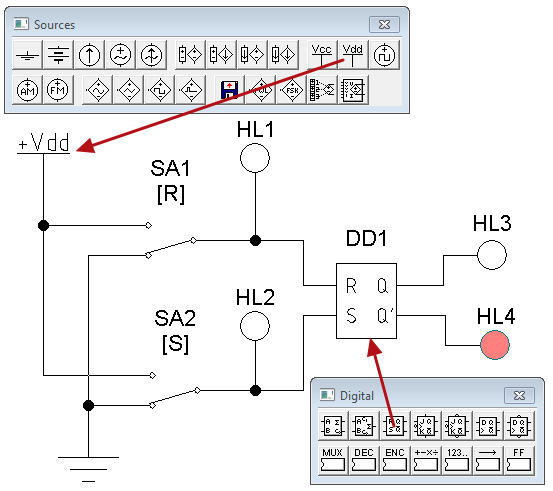
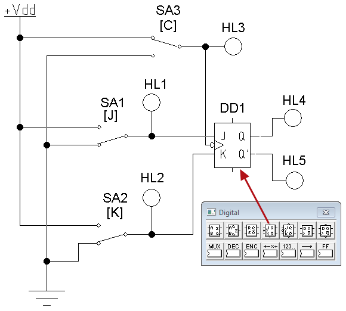

Electronics Workbench
Исследование триггеров
в программе Electronics Workbench
Подробнее о триггерах можно узнать здесь.
1. Исследование работы RS-триггера
- В программе Electronics Workbench cоберите модель для исследования RS-триггера (рис. 1).

Рис. 1 - Модель для исследования RS-триггера
1. Верхнее по схеме положение переключателей соответствует подаче логической «1», нижнее положение - логического «0».
2. Положение переключателей изменяется при нажатии на клавиатуре клавиш «R» (SA1) и«S» (SA2) .
3. Белый цвет индикаторов HL1-HL4 соответствует логическому «0», красный цвет -логической «1» . - Установите свойства элементов схемы (табл. 1).
Для установки свойств:- сделайте двойной щелчок на элементе;
- откройте вкладку (Label, Value или Models);
- установите значения.
Таблица 1
Свойства элементов схемы (рис. 2) Наименование Обозначение
элементаВкладка Label
(Свойство:Значение)Вкладка Value
(Свойство:Значение)Индикатор HL1 Label: HL1 Индикатор HL2 Label: HL2 Индикатор HL3 Label: HL3 Индикатор HL4 Label: HL4 RS-триггер DD1 Label: DD1 Переключатель SA1 Label: SA1 Key: R Переключатель SA2 Label: SA2 Key: S - Щелкните мышкой на кнопке
 в верхнем правом углу, чтобы включить схему.
в верхнем правом углу, чтобы включить схему. - Определите состояние индикаторов HL3-HL4, когда на оба входа поданы логические «0» и запишите результат в табл. 2 (строка 1) в рабочей тетради.
Таблица 2
Таблица состояний
RS-триггера№ R (HL1) S (HL2) Q (HL3) Q (HL4) 1 0 0 2 0 0→1 3 0 1→0 4 0→1 0 5 1→0 0 6 1 1 - Нажмите на клавиатуре клавишу с символом «S», чтобы на вход S подать логическую «1».
- Состояния индикаторов HL3-HL4 запишите в табл. 2 (строка 2) в рабочей тетради.
- Нажмите на клавиатуре клавишу с символом «S», чтобы на вход S подать логический «0».
- Состояния индикаторов HL3-HL4 запишите в табл. 2 (строка 3) в рабочей тетради.
- Нажмите на клавиатуре клавишу с символом «R», чтобы на вход R подать логическую «1».
- Состояния индикаторов HL3-HL4 запишите в табл. 2 (строка 4) в рабочей тетради.
- Нажмите на клавиатуре клавишу с символом «R», чтобы на вход R подать логический «0».
- Состояния индикаторов HL3-HL4 запишите в табл. 2 (строка 5) в рабочей тетради.
- Нажмите на клавиатуре клавиши с символом «R» и «S», чтобы на оба входа подать логическую «1».
- Состояния индикаторов HL3-HL4 запишите в табл. 2 (строка 6) в рабочей тетради.
- Щелкните мышкой на кнопке в верхнем правом углу, чтобы выключить схему.
2. Исследование работы логического элемента «ИЛИ»
- В программе Electronics Workbench cоберите модель для исследования JK-триггера ( рис. 2).

Рис. 2 - Модель для исследования JK-триггера
1. Верхнее по схеме положение переключателей соответствует подаче логической «1», нижнее положение - логического «0».
2. Положение переключателей изменяется при нажатии на клавиатуре клавиш «J» (SA1), «K» (SA2) и«C» (SA3) .
3. Белый цвет индикаторов HL1-HL5 соответствует логическому «0», красный цвет -логической «1» . - Установите свойства элементов схемы (табл. 3).
Таблица 3
Свойства элементов схемы (рис. 2) Наименование Обозначение
элементаВкладка Label
(Свойство:Значение)Вкладка Value
(Свойство:Значение)Индикатор HL1 Label: HL1 Индикатор HL2 Label: HL2 Индикатор HL3 Label: HL3 Индикатор HL4 Label: HL4 Индикатор HL5 Label: HL5 JK-триггер DD1 Label: DD1 Переключатель SA1 Label: SA1 Key: J Переключатель SA2 Label: SA2 Key: K Переключатель SA3 Label: SA3 Key: C - Установите переключатели в положения, которые показаны на рис. 2.
- Щелкните мышкой на кнопке в верхнем правом углу, чтобы включить схему.
- Определите состояние индикаторов HL4-HL5, когда на входы «J» и «K» поданы логические «0», на вход синхронизации «С» - логическая «1». Результат запишите в табл. 4 (строка 1) в рабочей тетради.
Таблица 4
Таблица состояний
JK-триггера№ J (HL1) K (HL2) С (HL3) Q (HL4) Q (HL5) 1 0 0 1 2 0 0 1→0 3 1 0 0 4 1 0 0→1 5 1 0 1→0 6 0 1 1→0 7 1 1 1→0 8 1 1 1→0 - Нажмите на клавиатуре клавишу с символом «С», чтобы на вход С подать логический «0».
- Состояния индикаторов HL4-HL5 запишите в табл. 4 (строка 2) в рабочей тетради.
- Нажмите на клавиатуре клавишу с символом «J», чтобы на вход J подать логическую «1».
- Состояния индикаторов HL4-HL5 запишите в табл. 4 (строка 3) в рабочей тетради.
- Нажмите на клавиатуре клавишу с символом «С», чтобы на вход С подать логическую «1».
- Состояния индикаторов HL4-HL5 запишите в табл. 4 (строка 4) в рабочей тетради.
- Нажмите на клавиатуре клавишу с символом «С», чтобы на вход С подать логический «0».
- Состояния индикаторов HL4-HL5 запишите в табл. 2 (строка 5) в рабочей тетради.
- Нажмите на клавиатуре клавишу с символом «С», чтобы на вход С подать логическую «1».
- Нажмите на клавиатуре клавишу с символом «J», чтобы на вход J подать логический «0».
- Нажмите на клавиатуре клавишу с символом «К», чтобы на вход К подать логическую «1».
- Нажмите на клавиатуре клавишу с символом «С», чтобы на вход С подать логический «0».
- Состояния индикаторов HL4-HL5 запишите в табл. 2 (строка 6) в рабочей тетради.
- Нажмите на клавиатуре клавишу с символом «С», чтобы на вход С подать логическую «1».
- Нажмите на клавиатуре клавишу с символом «J», чтобы на вход J подать логическую «1».
- Нажмите на клавиатуре клавишу с символом «С», чтобы на вход С подать логический «0».
- Состояния индикаторов HL4-HL5 запишите в табл. 2 (строка 7) в рабочей тетради.
- Нажмите на клавиатуре клавишу с символом «С», чтобы на вход С подать логическую «1».
- Нажмите на клавиатуре клавишу с символом «С», чтобы на вход С подать логический «0».
- Состояния индикаторов HL4-HL5 запишите в табл. 2 (строка 8) в рабочей тетради.
- Щелкните мышкой на кнопке в верхнем правом углу, чтобы выключить схему.
- Сделайте выводы по результатам проделанной работы.